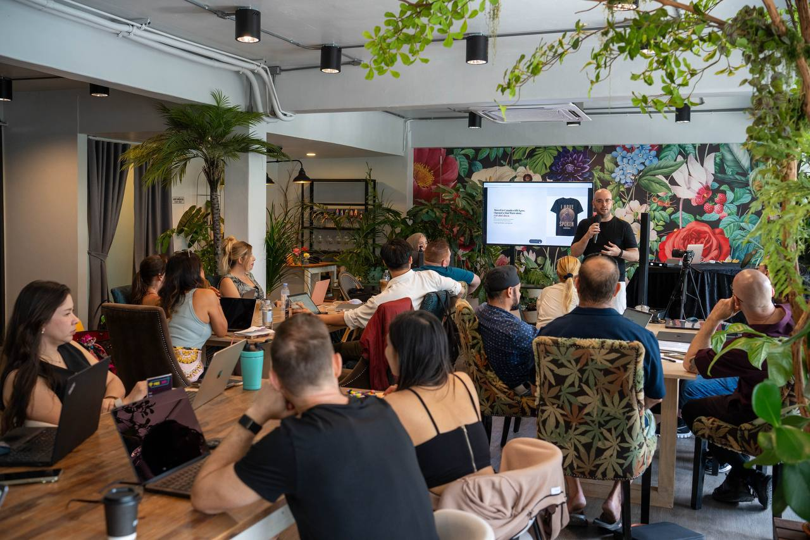
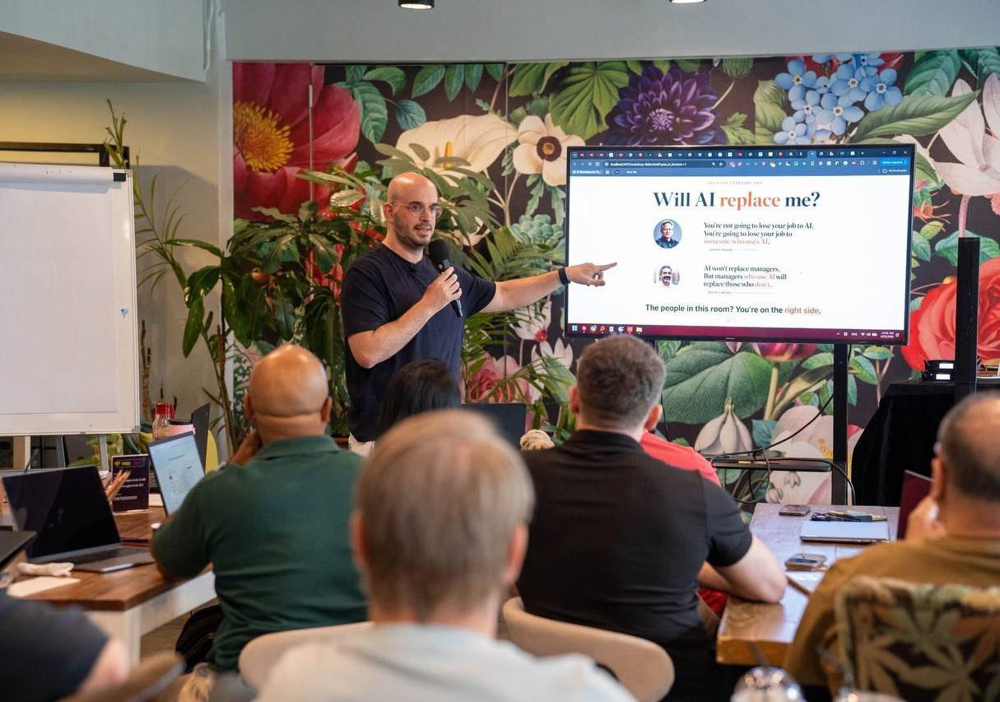
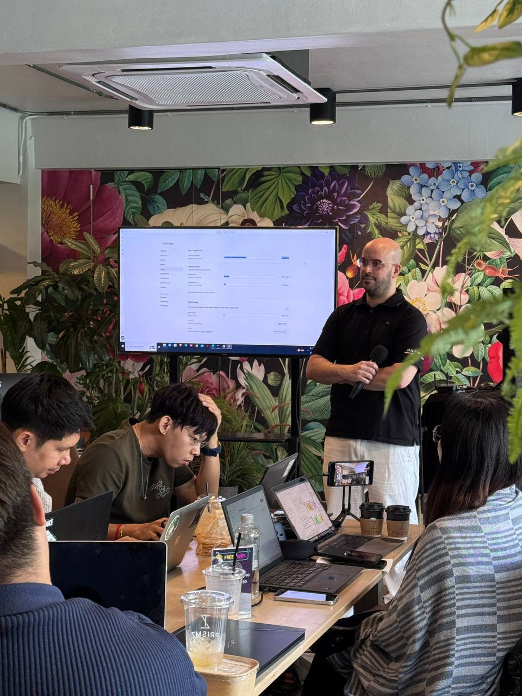
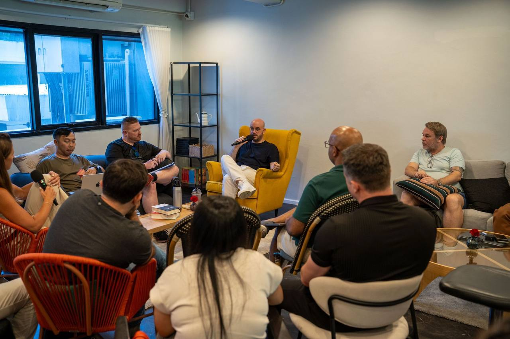

Stop using AI like a chatbot. Run your business from your phone.
Phone CEO Blueprint shows you how to set up an AI business assistant you can talk to with voice notes, so content, follow-ups, reminders, plans, and replies do not have to wait until you sit at a computer.
You do not hate running your business. You hate being chained to the computer.
The tabs, logins, half-finished tasks, messages, content ideas, and follow-ups pile up. Then life happens: kids, clients, errands, travel, meetings. The work waits for laptop time.
Ideas disappear
You think of good content, offers, and follow-ups while walking or driving, then lose them before you sit down.
Small tasks drain you
Replies, reminders, planning, notes, posts, summaries, and follow-ups are simple but constant.
AI feels like another app
Most people type random prompts, get one answer, then go back to doing the work themselves.
Short voice notes become business execution.
Your phone is the remote control. Your AI agent is the operator. You talk. Your assistants organize, draft, remind, plan, and execute.




Jonny has coached 10,000+ people online and helped 200+ Bangkok founders and CEOs in hands-on AI workshops. This Blueprint turns the same practical operator mindset into a simple first setup you can start from your phone.
What you get inside Phone CEO Blueprint
The first version is built for fast setup and a fast win: “I can just talk to this and it starts helping.”
Phone CEO Setup Guide
Get your AI assistant working from your phone without becoming technical.
5-Minute Daily Routine
Exactly what to say each morning for priorities, reminders, content, and follow-ups.
Daily Operator Voice Note
Turn messy voice notes into tasks, plans, drafts, reminders, and next actions.
Business Memory Builder
Teach your AI your offers, clients, tone, important facts, and recurring tasks.
Content From Voice Notes
Turn walking or driving thoughts into posts, emails, scripts, and campaign ideas.
Lead Reply + Follow-Up
Create cleaner replies, reminders, and follow-up actions from your phone.
Old way
- Sit at laptop
- Open 17 tabs
- Re-type your ideas
- Forget follow-ups
- Wait until you have “computer time”
Phone CEO way
- Open phone
- Send voice note
- AI turns it into a plan, message, task, post, reminder, or follow-up
- You review and approve
- Business keeps moving during real life
Set up your first AI operator task in 60 minutes.
Start with the simple Blueprint. If you want help building the full version for your business later, the next step is Phone CEO Club or a live build session.
First AI Operator Task in 60 Minutes Guarantee
Follow the setup, send your first voice note command, and get at least one useful business output. If you cannot get one practical result within 60 minutes, email us and we’ll refund you.
Phone CEO Blueprint
Instant access to the core setup, daily voice-note routine, and first workflows.
- Phone-based AI assistant setup
- 5-minute daily operator routine
- Voice-note workflow templates
- Business memory setup
- Content, reply, reminder, and planning workflows
- Virtual office / AI operator demo
Questions cold buyers will ask
Do I need to be technical?
No. The promise is built around normal phone behavior. If you can send voice notes, you can start using the workflow.
Is this just another prompt pack?
No. Prompts are included, but the product is the phone-first workflow: voice notes in, business actions out.
What kind of work can it help with?
Planning, reminders, content drafts, sales replies, follow-up messages, offer ideas, meeting notes, checklists, and the admin tasks you keep avoiding.
Does it run my whole business automatically?
No. You still approve decisions. The goal is to turn your phone into a command center so your AI assistant can organize and draft the work faster.
What happens after the Blueprint?
If you want more help, the next step is Phone CEO Club on Skool or a live build session where we help build workflows for your actual business.
Your business should not stop moving just because you are away from the computer.
Send the voice note. Let your AI assistants start working. Review the output from your phone. Keep your business moving while real life is happening.